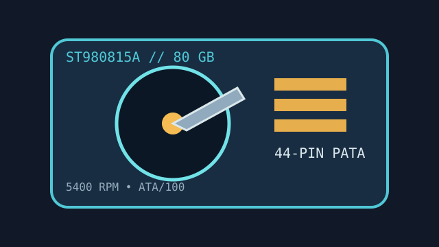

[ IDENTIFIED HDD // MODEL-SPECIFIC RECORD ]
Seagate Momentus 5400.3 ST980815A
80 GB, 2.5-inch mobile PATA hard drive. This record is for the complete ST980815A model code; a similar SATA suffix is not interchangeable.

IDENTIFICATION: Confirm the label, ATA connector, jumper configuration and host support before replacement or imaging.
Recorded specifications
| Exact model / capacity | ST980815A / 80 GB nominal |
|---|---|
| Form factor / height | 2.5-inch / 9.5 mm |
| Interface | Parallel ATA (PATA), Ultra ATA/100; 44-pin mobile connector |
| Rotation / cache | 5,400 RPM / 8 MB buffer |
| Sector / recording format | 512 bytes per sector; perpendicular magnetic recording (PMR). Do not assume 512e or 4Kn. |
Compatibility, noise, shock and reliability
- Requires a PATA-capable host or bridge, correct master/slave or cable-select setup, a compatible 44-pin connector and 5 V supply. A SATA-only port will not operate it.
- Manufacturer documentation lists about 2.3 bel idle noise (sound power) and up to 3.0 bel during seek, with operating shock rated at 350 G (2 ms) and non-operating shock at 900 G (1 ms); these are defined test limits, not handling targets.
- The listed 600,000 load/unload-cycle rating is a design specification, not a remaining-life estimate. Clicking, repeated spin-up or read errors warrant stopping writes and unnecessary power cycles.
- Legacy BIOS capacity limits and adapter translation can affect detection. Confirm the host's reported capacity and sector size before cloning or partitioning.
Manufacturer documents
- Seagate Momentus 5400.3 PATA Product Manual, Rev. AModel-family technical and installation manual; verify exact model and revision against the label.
- Seagate Momentus 5400 Data SheetManufacturer product-family capacities, interface and acoustic/performance context.
Specifications describe the model family and do not predict the condition of an individual used drive.